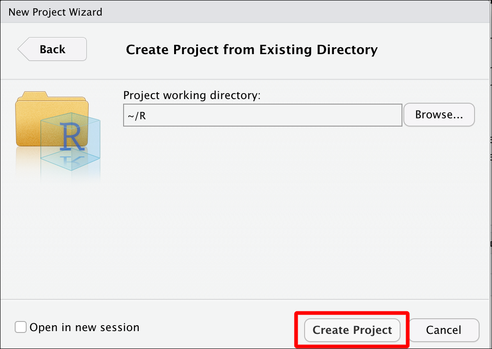
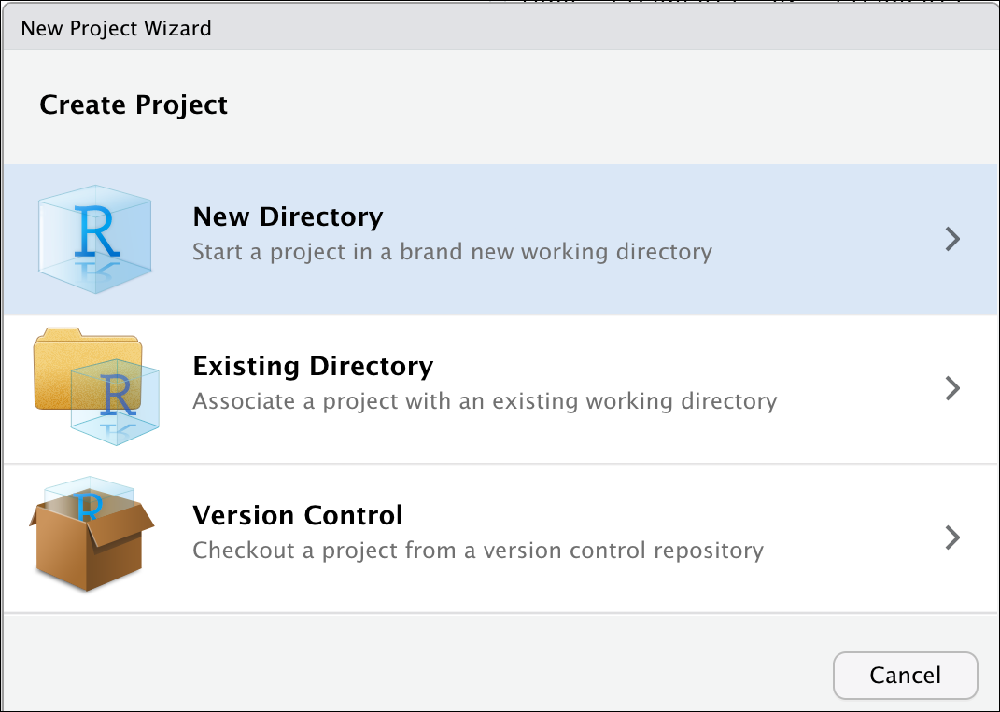
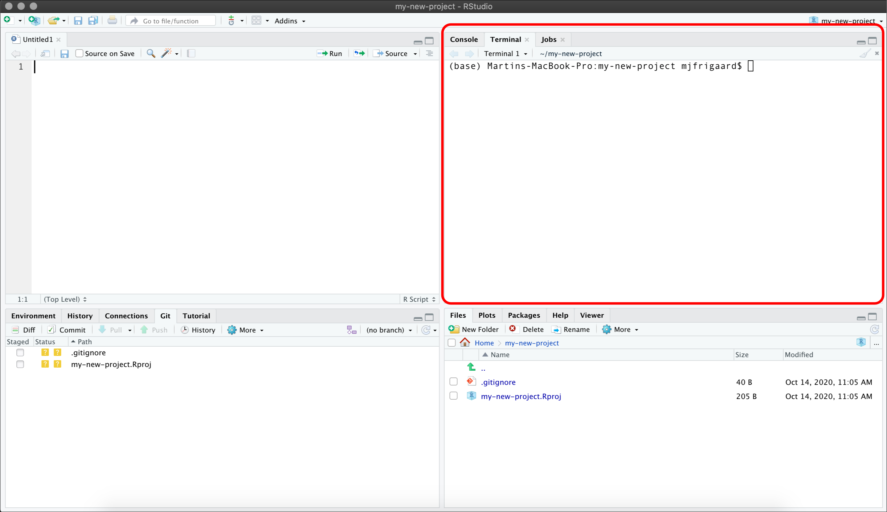

R Workflow Best Practices
1 Objectives
This lesson covers some tips on managing your code, datasets, and other files with RStudio. The sections below give a tour of the IDE, and some of the customizations that you can do to increase your productivity.
I’ve included some comments in italics–these are just my personal observations, feel free to set up the IDE in a way that works best for you!
2 Materials
Check out the slides for this section here.
3 Global Settings
These can be found under Tools > Global Options…
3.1 General
Click on Tools > Global Options…, in the General section, you will see settings for Workspace
3.1.1 Workspace
Un-check the option for “Restore .RData into workspace at startup”
3.1.2 .RData
We also don’t want the workspace to .RData on exit, so we will set this to Never
3.1.3 General settings
How your General settings should look:
3.2 Code
Under Tools > Global Options… click on Code
3.2.1 Code editing
- Auto indent? not recommended if you regularly paste lots of text
- Continue comment lines? very handy if you write a lot of comments
- Save R scripts before sourcing? can’t see how this is a bad thing…
3.2.2 Code display
- Margins? this is handy for knowing when to wrap code
- Scrolling? not sure why this is even an option?
- Rainbow parentheses? add some color to your life!

3.2.3 Code saving
- Cursor position? this is nice when you want to remember where you left off
- Line endings? ‘platform native’ seems the safest
- Text encoding? I use UTF-8, but ASCII works for special characters
3.2.4 Code completion
- Insert parentheses? one less things to think about/type
- Insert spaces? reduces the keystroke/neuron load
- Completion delay setting? how quickly do you want help? :)
3.2.5 Code diagnostics
- Check your R Code? just about all of these help me write better code
- Check other languages? I write other languages, so this is a great feature
- How long? as quickly as possible :)
3.3 Console
Under Tools > Global Options… click on Console
The console is where we can enter code directly, and where we’ll see output. We should consider the following settings:
Display? IMO, syntax highlighting makes sense pretty much everywhere
Debugging? this makes sense
Other? this is a personal preference
3.4 Appearance
Under Tools > Global Options… click on Appearance
- RStudio theme? varies from lighter >> darker
- Zoom? controls the entire IDE
- Also hold
⌘and press+on macOS - Also hold
ctrland press+on Windows
- Also hold
- Font? also can adjust with Zoom
- Editor theme? check out
rsthemespackage
3.5 Pane layout
Under Tools > Global Options… click on Pane Layout
3.5.1 Default panes
- Source? this is where I do most of my work
- Console? position so I can see output
- Combining? I prefer:
- Plots, Connections, Build, VCS, Presentation
- Files, Packages, Help, Tutorial, Viewer

3.5.2 Adding columns
- Two screens?
- add a Source column and rearrange the panes

3.5.3 Three column view
Now you see Source, Tutorial, and Console panes on a single screen!

4 RStudio projects
Keep track of all your files with RStudio project files (.Rproj).
4.1 Why RStudio Projects?
Self contained Using R projects keeps track or your current working directory!
Project orientated
.Rprojfiles make bundling and shipping files and folders easier!Avoid removing all the files
see tweets below and tidyverse article
If the first line of your R script is
setwd("C:\Users\jenny\path\that\only\I\have")
I will come into your office and SET YOUR COMPUTER ON FIRE üî•
If the first line of your R script isrm(list = ls())
I will come into your office and SET YOUR COMPUTER ON FIRE üî•
4.1.1 RStudio project (existing folder)
Click on ‘Project: (New)’ > ‘New Project’

Click on ‘Browse’ > ‘Create Project’

4.1.2 RStudio project (new folder)
Click on ‘Project: (New)’ > ‘New Project’

Select project type

Create new folder name

Choose parent folder

Use Git (if installed)

5 Folders and files
Good folder and file organization saves time and headaches.
5.1 Folder structure
See the tabs below for some basic guidelines on folder structure and file naming.
5.1.1 General advice
separate raw and cleaned data
keep documents and code separate
keep figures separate
name files appropriately (preferably 2 digit prefix)
structure is reusable and easy to understand
5.1.2 Example folder structure
Adapted from from ‘Good enough practices in scientific computing’
project-name/
|-- CITATION
|-- project-name.Rproj
|-- README.md
|-- LICENSE
|-- requirements.txt
|--data/
|--raw/
|--raw-birds-data.csv
|--processed/
|--processed-birds-data.csv
|--doc/
|-- notebook.Rmd
|-- manuscript.Rmd
|-- changelog.txt
|-- results/
|-- summarized-results.csv
|-- code/
|-- 01-sightings-import.R
|-- 02-sightings-wrangle.R
|-- 03-sightings-model.R
|-- runall.R5.2 Naming files
Basic rules to follow:
human readable -> (makes sense)
machine readable -> (regex)
sort/order well -> (ISO 8601 date)
5.2.1 Example file names
These are handy names:
2020-10-12-270-301-central-lab-metrics.csv
2020-10-12-270-301-central-lab-metrics.csv
2020-10-12-270-301-central-lab-metrics.csv
So are these:
01.0-import_270-301_central-lab-metrics.R
02.0-wrangle_270-301_central-lab-metrics.R
03.0-eda_270-301_central-lab-metrics.R
04.0-model_270-301_central-lab-metrics.R
*Adapted from Jenny Byran’s slides
5.2.2 Locating files
We can use regular expressions to find ‘270-301’ files!!
grepl(pattern = "270-301",
x = "2020-10-12-270-301-central-lab-metrics.csv")
#> [1] TRUE*Adapted from Jenny Byran’s slides
5.2.3 Other examples
Logical order and underscores _ also make it easier to sort files
# writeLines(files)
files
#> [1] "01.0-import_270-301_central-lab-metrics.R"
#> [2] "02.0-wrangle_270-301_central-lab-metrics.R"
#> [3] "03.0-eda_270-301_central-lab-metrics.R"
#> [4] "04.0-model_270-301_central-lab-metrics.R"stringr::str_split_fixed(string = files, pattern = "_", 3)
#> [,1] [,2] [,3]
#> [1,] "01.0-import" "270-301" "central-lab-metrics.R"
#> [2,] "02.0-wrangle" "270-301" "central-lab-metrics.R"
#> [3,] "03.0-eda" "270-301" "central-lab-metrics.R"
#> [4,] "04.0-model" "270-301" "central-lab-metrics.R"*Adapted from Jenny Byran’s slides
5.3 File paths
Use relative rather than absolute file paths
5.3.1 Absolute paths
These are specific to a system
/project-name/data -> absolute path in macOS
\\project-name\\data -> absolute path in Windows
5.3.2 Relative paths
These are specific to a folder
project-name/data -> relative path in macOS
project-name\\data -> relative path in Windows
6 Useful packages
This section covers some packages to help manage files and folders.
6.1 The here package
The here::set_here() function solves a lot of file path problems (especially if you’re not using R projects)
6.1.1 Using here()
library(here)
#> here() starts at /Users/mjfrigaard/Documents/@BioMarin/r-meetup-tutorials6.1.2 set_here(".")
This creates a .here file (similar to .Rproj files)
here::set_here(".")
#> Created file .here in /Users/mjfrigaard/Documents/@BioMarin/r-meetup-tutorials . Please start a new R session in the new project directory.
list.files(all.files = TRUE, pattern = "here")
#> [1] ".here"6.2 The fs package
The fs package stands for file system and is great for locating and accessing files.
6.2.1 Folder trees
View a tree layout of your files with fs::dir_tree().
fs::dir_tree("data")
#> data
#> ├── 2020-11-24-TopPharmCompRaw.csv
#> ├── 2020-12-11-BioTechDrugStocks.csv
#> ├── 2020-12-11-BmrmGoogle.rds
#> ├── 2020-12-20-BioTechStocks.csv
#> ├── 2020-12-24-BioTechStocks.csv
#> ├── 2020-12-29-PricesWide.csv
#> ├── 2020-12-30-PricesWide.csv
#> ├── AppleMobRaw.csv
#> ├── FasterCures.csv
#> ├── Infected.csv
#> ├── LabData.csv
#> ├── LabProc.csv
#> ├── SmallLabData.csv
#> ├── TopPharmComp.csv
#> ├── UsadaBadDates.csv
#> ├── UsadaRaw.csv
#> ├── VisitNAData.csv
#> ├── original-starwars.csv
#> └── starwars.rds6.2.2 List files
Get the complete path to files using fs::dir_ls().
fs::dir_ls("data")
#> data/2020-11-24-TopPharmCompRaw.csv data/2020-12-11-BioTechDrugStocks.csv
#> data/2020-12-11-BmrmGoogle.rds data/2020-12-20-BioTechStocks.csv
#> data/2020-12-24-BioTechStocks.csv data/2020-12-29-PricesWide.csv
#> data/2020-12-30-PricesWide.csv data/AppleMobRaw.csv
#> data/FasterCures.csv data/Infected.csv
#> data/LabData.csv data/LabProc.csv
#> data/SmallLabData.csv data/TopPharmComp.csv
#> data/UsadaBadDates.csv data/UsadaRaw.csv
#> data/VisitNAData.csv data/original-starwars.csv
#> data/starwars.rds6.3 Reproducible examples
The reprex package was designed to help you create a reproducible example
6.3.1 Reprex addin 1
- Copy code
- Select Addin > Render selection

6.3.2 Reprex addin 2
- Copy code
- Select Addin > Render selection
- Wait for console
- Paste reprex


7 More RStudio panes
RStudio also comes with access to a Terminal and Help pane.
7.1 Terminal pane
Learn a handful of command-line tools to make life easier
7.1.1 Command line basics
Know how to use cd, pwd, mkdir, rm, ls, etc.
7.1.2 Terminal in RStudio
RStudio comes with a Terminal pane for quick access to the command-line

7.2 Getting help
R comes with a ton of accessible help files
7.2.1 Accessing help files
?read.csv7.2.2 The Help pane